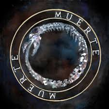

Tirone José González Orama (Caracas, 11 de marzo de 1988-Maracay, 19 de enero de 2015) conocido artísticamente como Canserbero, fue un rapero, compositor y activista venezolano. Es considerado como uno de los exponentes más significativos e influyentes en la historia del rap latino e independiente. anserbero comenzó su carrera musical a principios de la década de 2000 y rápidamente se convirtió en una figura significativa en el hip-hop latinoamericano. Era conocido por su contenido lírico agudo y su capacidad para abordar temas complejos con un enfoque crudo y honesto. Su música a menudo reflejaba sus luchas personales y críticas sociales. A lo largo de su carrera lanzó dos álbumes de estudio: Vida (2010) y Muerte (2012), respectivamente,con varias canciones destacadas. Canserbero fue colocado en el puesto número uno en la lista de los «50 grandes raperos en la historia del rap en español», publicada por la revista estadounidense Rolling Stone
Canserbero
ALBUM VIDA
En 2010, lanzó su álbum de estudio debut como solista, Vida, grabado y editado en Caracas, junto a su productor Kpú. Este álbum, al igual que los demás, fue grabado en un estudio de grabación conocido como «El Techo». Debido a la gran aceptación por parte del público en 2011, recibió el galardón al mejor artista hip hop en los premios Dixtorxión,27 dándose a conocer en otros países de habla hispana.
ALBUM MUERTE
En 2012, publicó su segundo álbum, Muerte, y la segunda parte que completa el disco doble Vida/Muerte. El álbum cuenta con catorce temas de su autoría, siendo considerado uno de los álbumes más importantes en la historia del género rap en español. Durante ese mismo año realizó varios conciertos en Colombia, México y Venezuela. Al año siguiente lanzó un álbum llamado Apa y Can, junto al rapero Apache. El disco consta de temas como «Ready» y «Stop», una canción que emite fuertes críticas hacia los policías venezolanos. Entre 2013 a 2014, actuó en varios conciertos en países latinoamericanos, entre ellos Chile y Argentina, y también en España. En 2013, participó como vocalista en la canción «Ella», de Mala Rodríguez, para el álbum Bruja. Canserbero tenía varios proyectos musicales que llevaría a cabo en 2015 y preveía conciertos en países de Latinoamérica como Panamá.